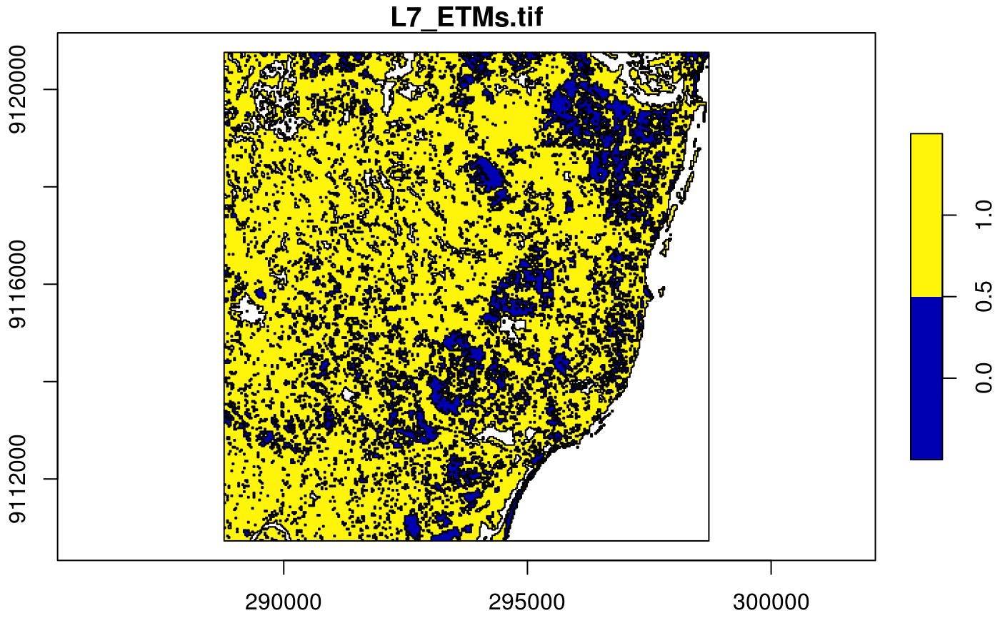

Convert stars object into an sf object
# S3 method for stars st_as_sfc(x, ..., as_points, which = seq_len(prod(dim(x)[1:2]))) # S3 method for stars st_as_sf(x, ..., as_points = !merge, na.rm = TRUE, merge = has_raster(x) && !(is_curvilinear(x) || is_rectilinear(x)), use_integer = is.logical(x[[1]]) || is.integer(x[[1]]))
| x | object of class |
|---|---|
| ... | ignored |
| as_points | logical; should cells be converted to points or to polygons? See details. |
| which | linear index of cells to keep (this argument is not recommended to be used) |
| na.rm | logical; should missing valued cells be removed, or also be converted to features? |
| merge | logical; if |
| use_integer | (relevant only if |
If merge is TRUE, only the first attribute is converted into an sf object. If na.rm is FALSE, areas with NA values are also written out as polygons.
tif = system.file("tif/L7_ETMs.tif", package = "stars") x = read_stars(tif) x = x[,,,6] # a band with lower values in it x[[1]][x[[1]] < 30] = NA # set lower values to NA x[[1]] = x[[1]] < 100 # make the rest binary x#> stars object with 3 dimensions and 1 attribute #> attribute(s): #> L7_ETMs.tif #> Mode :logical #> FALSE:16452 #> TRUE :78796 #> NA's :27600 #> dimension(s): #> from to offset delta refsys point values #> x 1 349 288776 28.5 +proj=utm +zone=25 +south... FALSE NULL [x] #> y 1 352 9120761 -28.5 +proj=utm +zone=25 +south... FALSE NULL [y] #> band 6 6 NA NA NA NA NULL(p = st_as_sf(x)) # removes NA areas#> Simple feature collection with 2949 features and 1 field #> geometry type: POLYGON #> dimension: XY #> bbox: xmin: 288776.3 ymin: 9110729 xmax: 298722.8 ymax: 9120761 #> epsg (SRID): NA #> proj4string: +proj=utm +zone=25 +south +ellps=GRS80 +towgs84=0,0,0,0,0,0,0 +units=m +no_defs #> First 10 features: #> L7_ETMs.tif geometry #> 1 0 POLYGON ((289517.3 9120761,... #> 2 0 POLYGON ((290144.3 9120761,... #> 3 0 POLYGON ((290315.3 9120761,... #> 4 0 POLYGON ((291113.3 9120761,... #> 5 0 POLYGON ((291341.3 9120761,... #> 6 1 POLYGON ((291455.3 9120761,... #> 7 1 POLYGON ((291569.3 9120761,... #> 8 0 POLYGON ((291911.3 9120761,... #> 9 1 POLYGON ((292053.8 9120761,... #> 10 0 POLYGON ((293136.8 9120761,...plot(p, axes = TRUE)(p = st_as_sf(x, na.rm = FALSE)) # includes polygons with NA values#> Simple feature collection with 4101 features and 1 field #> geometry type: POLYGON #> dimension: XY #> bbox: xmin: 288776.3 ymin: 9110729 xmax: 298722.8 ymax: 9120761 #> epsg (SRID): NA #> proj4string: +proj=utm +zone=25 +south +ellps=GRS80 +towgs84=0,0,0,0,0,0,0 +units=m +no_defs #> First 10 features: #> L7_ETMs.tif geometry #> 1 0 POLYGON ((289517.3 9120761,... #> 2 0 POLYGON ((290144.3 9120761,... #> 3 0 POLYGON ((290315.3 9120761,... #> 4 0 POLYGON ((291113.3 9120761,... #> 5 0 POLYGON ((291341.3 9120761,... #> 6 1 POLYGON ((291455.3 9120761,... #> 7 1 POLYGON ((291569.3 9120761,... #> 8 NA POLYGON ((291768.8 9120761,... #> 9 0 POLYGON ((291911.3 9120761,... #> 10 NA POLYGON ((291968.3 9120761,...plot(p, axes = TRUE)